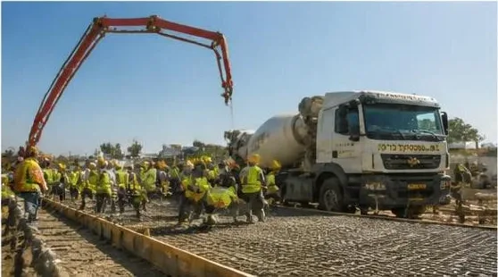

תחנת דלק מאחסנת עשרות אלפי ליטרים של חומר מזהם מתחת לאדמה, במרחק מטרים ספורים מקרקע ומי תהום. לכן הרגולציה הסביבתית סביב תחנות דלק היא מהמחמירות בענף הבנייה, והיא משפיעה על כמעט כל החלטה תכנונית: איזה מיכלים, איזו צנרת, איך מרצפים, ואיזה ציוד מותקן על המשאבות. המאמר מסביר את הדרישות העיקריות ומה הן אומרות בפועל למי שמקים או משפץ תחנה.
שני סוגי זיהום, שתי מערכות הגנה
הסיכונים הסביבתיים בתחנת דלק מתחלקים לשניים: זיהום אוויר מאדי דלק שמשתחררים במילוי ובתדלוק, וזיהום קרקע ומים מדליפות של מיכלים, צנרת או נגר עילי מרחבת התדלוק. לכל סיכון יש מערכת הגנה משלו.
מישוב אדים: Stage I ו-Stage II
אדי בנזין מכילים תרכובות אורגניות נדיפות, ובהן בנזן, שהוא חומר מסרטן. מערכות מישוב אדים לוכדות את האדים ומחזירות אותם למיכל במקום לשחרר אותם לאוויר.
- Stage I – מישוב במילוי המיכלים: כשמכלית פורקת דלק למיכל התת־קרקעי, האדים שנדחקים מהמיכל מוחזרים בצינור ייעודי למכלית. הדרישה חלה על המיכלים, על נקודות המילוי ועל צנרת האדים.
- Stage II – מישוב בתדלוק: בזמן תדלוק הרכב, האדים שנדחקים ממיכל הרכב נשאבים דרך האקדח וצנרת האדים חזרה למיכל התת־קרקעי. זה דורש אקדחים ייעודיים, משאבות עם יחידת ואקום, וצנרת אדים נפרדת מהמשאבה ועד המיכל.
מבחינת הביצוע, Stage II פירושו תוואי צנרת נוסף שצריך לתכנן ולהניח יחד עם צנרת הדלק, ובדיקות יעילות תקופתיות למערכת. בשיפוץ תחנה ותיקה, שדרוג ל-Stage II הוא לעיתים קרובות הסיבה לפתיחת הרחבה.
מניעת זיהום קרקע ומים
מיכלים דו־קיריים
מיכל דו־קירי בנוי משתי דפנות עם חלל ביניהן. דליפה מהדופן הפנימית נעצרת בדופן החיצונית, וחיישן בחלל הביניים מתריע לפני שטיפה אחת מגיעה לקרקע. זהו הסטנדרט למיכלים חדשים, ולרוב גם הדרישה בהחלפת מיכלים ישנים.
צנרת דו־קירית וגילוי דליפות
אותו עיקרון חל על הצנרת: צינור בתוך צינור, עם ניקוז או ניטור של החלל שביניהם לנקודת גילוי. חיבורי הצנרת נעשים בתוך בריכות (sumps) אטומות מתחת למשאבות ומעל המיכלים, כך שגם דליפה בחיבור נאספת ומזוהה.
ניטור מיכלים ומאזן דלק
מערכת ניטור אלקטרונית עוקבת אחרי מפלס הדלק במיכלים ומשווה בין הכמות שנכנסה, הכמות שנמכרה והכמות שנשארה. פער עקבי הוא אינדיקציה לדליפה, גם כשהחיישנים לא הופעלו. במקומות רגישים נדרשים גם קידוחי ניטור סביב בור המיכלים.
ריצוף אטום ומפריד שמן ודלק
רחבת התדלוק ואזור המילוי חייבים להיות משטח אטום, בדרך כלל בטון מזוין, עם שיפועים שמובילים כל נוזל לתעלות איסוף ומשם למפריד שמן ודלק. המפריד מפריד את הדלק והשמן מהמים לפני שהמים ממשיכים למערכת הניקוז. ריצוף לא אטום או שיפועים שגויים הם מהליקויים הנפוצים בביקורות.
מה זה אומר למי שמקים או משפץ תחנה
| דרישה | השפעה על הביצוע |
|---|---|
| מישוב אדים Stage II | צנרת אדים נוספת, משאבות ואקדחים מתאימים, בדיקות יעילות |
| מיכלים דו־קיריים | בור מיכלים מדויק, עיגון, חיישני חלל ביניים, בדיקת אטימות לפני כיסוי |
| צנרת דו־קירית | בריכות אטומות מתחת למשאבות, בדיקות לחץ מתועדות, גילוי דליפות |
| ריצוף אטום | בטון מזוין עם שיפועים מחושבים, תעלות איסוף, מפריד שמן ודלק |
| ניטור ובקרה | מערכת ניהול מיכלים, תיעוד מאזני דלק, לעיתים קידוחי ניטור |
בשיפוץ תחנה ותיקה השאלה המרכזית היא סדר העבודה: איך להחליף מיכלים, צנרת וריצוף כשהתחנה ממשיכה למכור דלק. תכנון שלבי נכון, שבו חלק מהעמדות נשאר פעיל בכל שלב, הוא ההבדל בין השבתה של ימים להשבתה של שבועות.
שאלות נפוצות
האם כל תחנה חייבת Stage II?
הדרישה חלה בהתאם לתקנות ולתנאי רישיון העסק, ובדרך כלל תלויה בהיקף המכירות של בנזין בתחנה. בתחנות חדשות נהוג לתכנן את המערכת מראש גם כשהסף עדיין לא הושג, כי הוספה מאוחרת יקרה בהרבה.
מה קורה כשמתגלה דליפה בתחנה קיימת?
יש לדווח לגורמים המוסמכים, לעצור את השימוש במיכל או בקו הרלוונטי, ולבצע סקר קרקע. בהתאם לממצאים נדרש שיקום קרקע, שיכול לכלול חפירה ופינוי קרקע מזוהמת והחלפת התשתית.
האם אפשר להשאיר מיכל ישן חד־קירי?
זה תלוי בגיל המיכל, במצבו ובדרישות שחלות על התחנה. ברוב המקרים, כשפותחים את הרחבה לצורך שדרוג, משתלם להחליף את המיכלים לדו־קיריים ולסגור את הנושא לעשרות שנים.